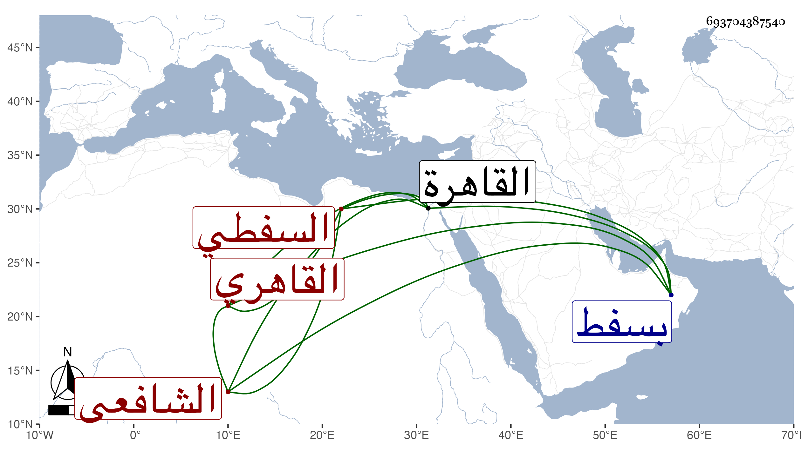

0902Sakhawi.DawLamic.ITO20230111-ara1.EIS1600.693704387540
Biography ID: 693704387540
674
محمد بن شعبان بن محمد السفطي ثم القاهري الشافعي ويعرف بابن الخطيب بالتصغير . ولد قبيل الستين تقريبا ونشأ بسفط . ثم قدم القاهرة قبل بلوغه مع أبيه وحفظ القرآن والمنهاج وعرضه علي في جملة الجماعة واشتغل يسيرا ، وكان أحد من قرأ على أخي في تقسيمين بل وأخذ عن موسى البرمكيني ، وقرأ علي وسمع مني أشسياء ثم مال إلى الترك واسترسل في الراحة ، وتزوج وصار يتعرض للمسئلة مع أدب ولطف وفهم وقد أقرأ بعض خدم الخواجا ابن قاوان وقرره قارئا عند قبر ابنته ورتب له في كل شهر دينارا وكان زائدا الإحسان إليه ودام ذلك مدة ، وبعد سفره انتمى لصهره إسحاق فكان يرتفق به في الجملة ، وقد حج وجاور قليلا ثم رجع في موسم سنة اثنتين وتسعين مع الصهر وتناقص حاله . ومات في طاعون سنة سبع وتسعين رحمه الله وعفا عنه .
